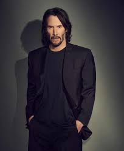

|  | Name | Keanu Charles Reeves |
| Born | September 2, 1964(age 57 years)Beirut,Lebanon | |
| Nationality | American, British, Canadian | |
| Alma matter | American Community School Beirut | |
| Occupation | Film Director,Film Producer,Film Actor,Singer,Actor de voz | |
| Years Active | 1984-present | |
| Height | 6' 1″ | |
| Spouse(s) | Jennifer Syme | |
| Children | Ava Archer Syme-Reeves |
Keanu Charles Reeves was born in Beirut, Lebanon, on September 2, 1964, the son of Patricia (née Taylor), a costume designer and performer, and Samuel Nowlin Reeves Jr. His mother is English, originating from Essex. His American father is from Hawaii, and is of Native Hawaiian, Chinese, English, Irish, and Portuguese descent. His paternal grandmother is Chinese Hawaiian. His mother was working in Beirut when she met his father, who later abandoned his wife and family when Reeves was three years old. Reeves last met his father on the island of Kauai when he was 13. After his parents divorced in 1966, his mother moved the family to Sydney, Australia, and then to New York City, where she married Paul Aaron, a Broadway and Hollywood director, in 1970. The couple moved to Toronto, Ontario, Canada, and divorced in 1971. When Reeves was nine, he took part in a theatre production of Damn Yankees. Aaron remained close to Reeves, offering him advice and recommending him a job at the Hedgerow Theater in Pennsylvania. Reeves' mother married Robert Miller, a rock music promoter, in 1976; the couple divorced in 1980. She subsequently married her fourth husband, a hairdresser named Jack Bond; the marriage lasted until 1994. Reeves and his sisters grew up primarily in the Yorkville neighbourhood of Toronto, with a nanny caring for them frequently. Because of his grandmother's ethnicity, he grew up with Chinese art, furniture, and cuisine. Reeves watched British comedy shows such as The Two Ronnies, and his mother imparted English manners that he has maintained into adulthood. Describing himself as a "private kid", Reeves attended four different high schools, including the Etobicoke School of the Arts, from which he was expelled. Reeves said he was expelled because he was "just a little too rambunctious and shot my mouth off once too often... I was not generally the most well-oiled machine in the school". At De La Salle College, he was a successful ice hockey goalkeeper. Reeves had aspirations to become a professional ice hockey player for the Canadian Olympic team but decided to become an actor when he was 15. After leaving De La Salle College, he attended Avondale Secondary Alternative School, which allowed him to get an education while working as an actor. He dropped out of high school when he was 17. He obtained a green card through his American stepfather and moved to Los Angeles three years later. Reeves holds Canadian citizenship by naturalization.
Reeves shared in an interview that he decided to become an actor at the age of 17 or 18, even though he appeared in a summer camp production of "Damn Yankees" when he was nine. He also played Mercutio in a high school production of "Romeo and Juliet." After high school, the star took acting courses at night, then joined community theater productions and got an agent. His first professional roles was on a local Toronto television program called "Hanging In," where he played a "tough street kid." Reeves followed up his role on "Hanging In" with more local theater and film productions, before moving to LA in in 1986.Reeves acted in a variety of films upon moving to Hollywood in 1986, including the teen crime drama "River's Edge" in 1986 and "Permanent Record," where he played the best friend of a teen who commits suicide. But Reeves' big break arguably came in 1989, with "Bill & Ted's Excellent Adventure." Fresh off a role in period drama "Dangerous Liaisons," Reeves' turn as stoner genius Ted garnered him instant acclaim. Although "Bill & Ted" received mixed reviews, Reeves was generally praised for his performance, and the movie was a hit at the box office. After "Bill & Ted's Excellent Adventure," Reeves also appeared in the 1989 family dramedy "Parenthood," which starred Steve Martin, Joaquin Phoenix, and Martha Plimpton as Reeves' love interest. While on the set of "Parenthood," Reeves got to know costar Joaquin Phoenix, and reportedly met his younger brother River (with whom he'd star in "My Own Private Idaho" with) while on set. Reeves joined the alt-rock band Dogstar as a bassist in the early 1990s, reportedly after an encounter with drummer Robert Mailhouse in a grocery store. The "Matrix" actor went on to play with the band for several years, and, after the group split, played bass in Becky, Mailhouse's subsequent project. Recently, Reeves reflected on his time in Dogstar, saying in a recent interview that he felt bad for making the band seem like the pet project of a famous actor. On the other hand, Reeves noted, "I guess it would have helped if our band was better." Reeves went on to act in an eclectic mix of films, ranging from the surf-driven crime thriller "Point Break" in 1991 to Gus Van Sant's 1991 critically acclaimed indie drama "My Own Private Idaho," the latter of which garnered Reeves a significant amount of praise. Reeves and his "Private Idaho" costar River Phoenix grew to be good friends after they finished filming. Phoenix's sudden death in 1993 deeply affected Reeves. Reeves would also go on to star in several period dramas around the same time as "Point Break," including "Much Ado About Nothing" and "Bram Stoker's Dracula," directed by Francis Ford Coppola.1994 saw Reeves star in his first blockbuster film, the crime thriller "Speed." The action film focused on the efforts of an LAPD detective, played by Reeves, who struggles to rescue civilians trapped on a bus that's been rigged with explosives by a serial bomber. Reeves' close friend and former costar River Phoenix died during the filming of "Speed," which reportedly caused the actor a great deal of pain. "I miss him greatly," Reeves said of Phoenix in a 1994 interview. Sandra Bullock costarred with Reeves in the film, which garnered critical and commercial acclaim upon release. Bullock and Reeeves grew close on the set of "Speed," with the actor even leaving gifts for her during film, per a 1994 interview with Entertainment Weekly. The 1999 sci-fi action film "The Matrix" is arguably one of Reeves' most iconic movies. Directed by the Wachowskis, the film tells the story of a computer hacker enlisted to take down dystopian overlords. While subsequent spin-off films weren't as successful, "The Matrix" franchise made Reeves a household name.
| Year | Title | Director | Co-stars | Role |
|---|---|---|---|---|
| 1999 | THE MATRIX | The Wachowskis | Laurence Fishburne,Hugo Weaving,Joe Pantoliano | Thomas Anderson/Neo |
| 2014 | JOHN WICK | Chad Stahelski | Ian McShane,Lance Reddick,Willem Dafoe | John Wick |
| 1995 | JOHNNY MNEMONIC | Robert Longo | Henry Rollins,Dolph Lundgren,Ice-T | William Gibson |